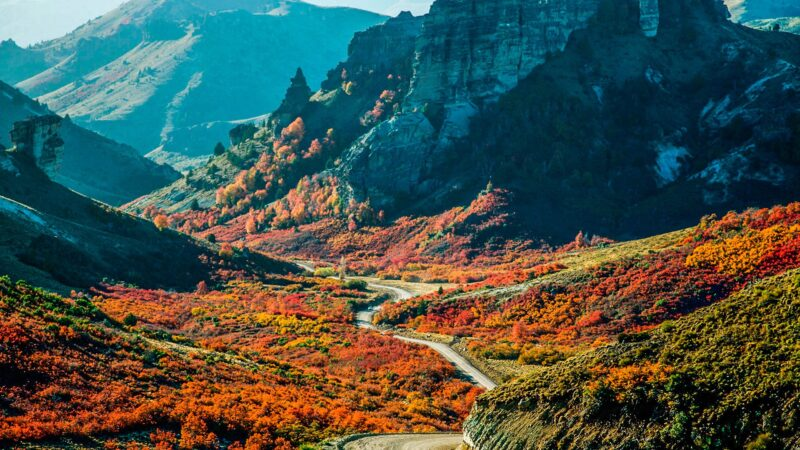
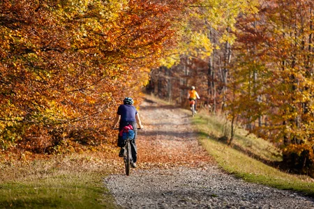
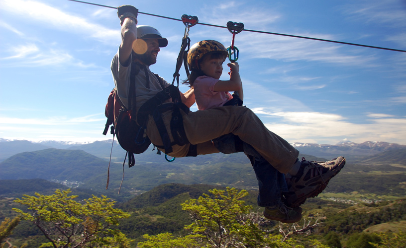
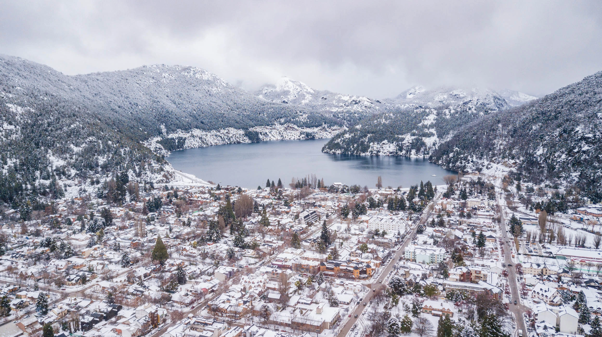
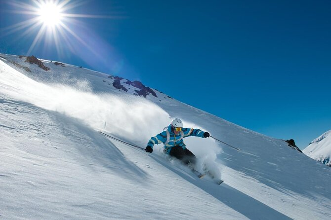
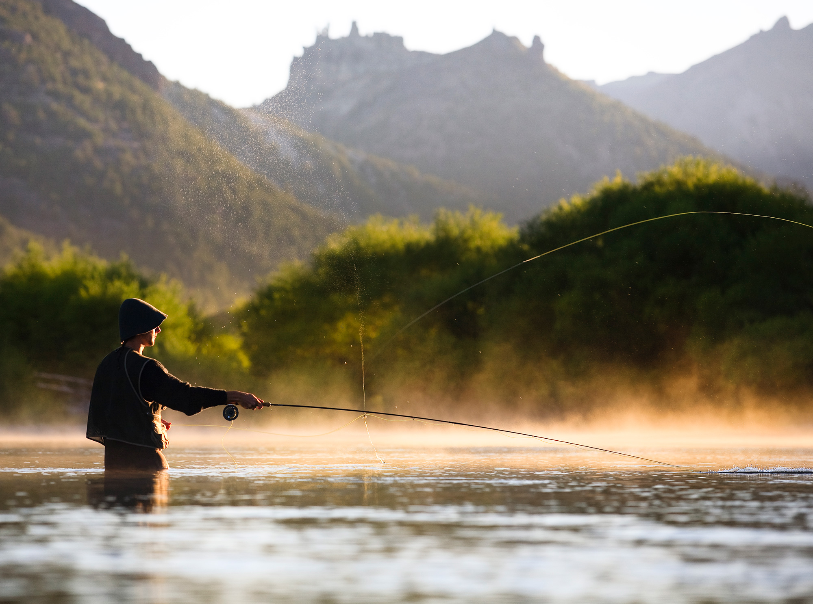
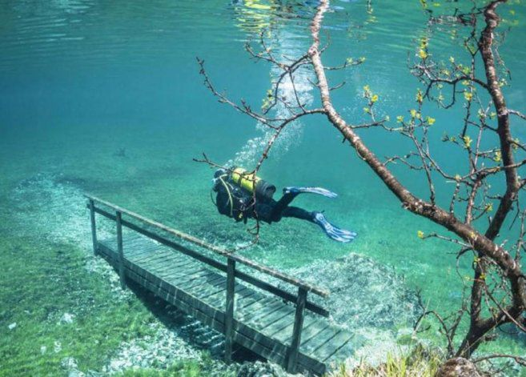
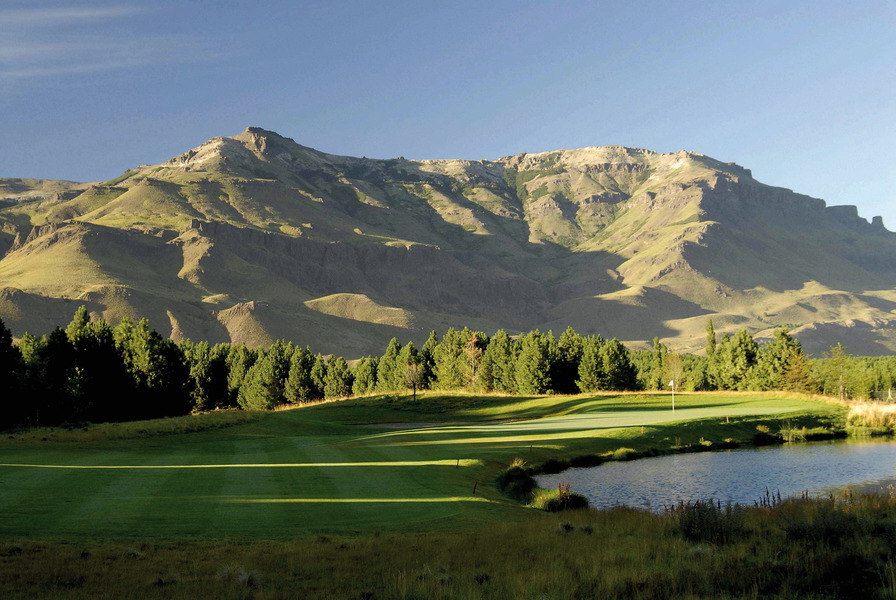

Verano
-

Cabalgatas.
El caballo, es una excelente opción para conocer a fondo la inmensidad de la Patagonia Argentina. Las sendas del Parque Nacional Lanín, cargadas de historias, hablan de pioneros, sueños y aventuras. Cada una de ellas, acompañada del ritual del mate, el asado y los cielos estrellados, sorprende y emociona. -
Rafting.
Una de las actividades favoritas en los últimos tiempos es el rafting. La velocidad de los recorridos provoca una sensación indescriptible y quienes ya lo probaron persisten mediante la prueba en distintos circuitos. En el paso internacional de Hua Hum, existen rápidos con sólo grado dos de dificultad, característica que lo hace accesible a toda la familia. -
Navegación a vela.
Los deportes náuticos son ideales para lograr experiencias únicas en un marco natural donde la belleza lo invita a la aventura de la navegación a vela. La cantidad de lagos y playas que rodean a San Martín de los Andes, le proporcionan infinidad de oportunidades para pasar sus vacaciones en familia y con la naturaleza presente en cada momento.
Otoño
-

Trekking.
El vasto territorio patagónico argentino, con sus volcanes, llanuras, montañas y lagos, resulta toda una invitación para los que, a puro esfuerzo y sólo guiados por la voluntad salen en búsqueda de la aventura. -

Mountain bike.
En esos recorridos se puede disfrutar de la variada flora cordillera, bosques cerrados o extensiones esteparias, ríos, arroyos y lagos de aguas cristalinas, avistajes de aves en medio de los bosques nativos, detenciones en casas de te para cerrar una tarde de pedaleo. -

Canopy.
Esta aventura es exclusivamente ambientalista, ya que el turista que lo practica se inserta, en el mismo corazón de nuestro bosque nativo, y se impregna del naturalismo típico de nuestra zona y de su biodiversidad, conociendo y vivenciando los distintos tipos de ejemplares arbóreos nativos, paseando sobre el dosel del bosque, pudiendo observar absolutamente todo el bosque, desde el nivel más alto.
Invierno
-

Paseo por la ciudad.
la ciudad crece a lo largo de tres de las avenidas más importantes: Gral Villegas, San Martín y Gral Roca. En ellas se suceden la mayoría de los negocios que encantan a los turistas que visitamos la ciudad, como ser restaurantes, bares, cervecerías, chocolaterías y tiendas de recuerdos y ropa. Aunque también hay plazas para disfrutar del aire libre y otros edificios representativos de la ciudad. -

Paseos 4x4.
San Martin de los Andes, está colmada de sitios para andar y disfrutar en vehículos 4x4. Con un valor agregado: la camaradería y los buenos momentos que ofrece una pasión compartida. -

Esquí.
El Cerro Chapelco es uno de los centros de Esquí más hermosos y panorámicos de Argentina. Ubicado a 1.980 metros de altura, es considerado desde hace tiempo sinónimo del Esquí argentino y también internacional, ya que su fama mundial ha llegado incluso a los lugares más remotos, con visitantes que todos los años se dan cita para acercarse a sus pistas.
Primavera
-

Pesca.
En San Martín de los Andes y alrededores, la gran variedad de ríos y lagos de fácil acceso que albergan en sus aguas truchas y salmónidos, son óptimos para la pesca. -

Buceo.
El hábitat submarino brinda tranquilidad, diversión y un contexto propicio para la aventura, caracterizado por una bella flora y fauna acompañadas por maravillosos tesoros ocultos. -

Golf.
San Martin de los Andes ofrece un espectacular complejo preparado para la práctica del golf ubicado a pocos kilómetros de la ciudad, en un valle rodeado de montañas y administrado bajo la premisa fundamental del cuidado del medio ambiente.